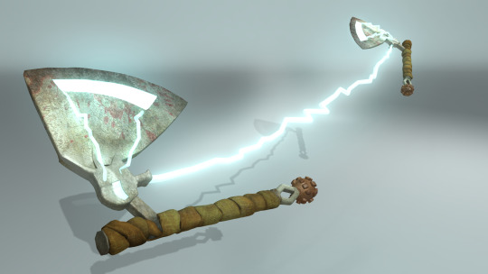
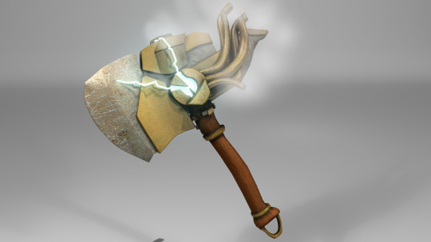
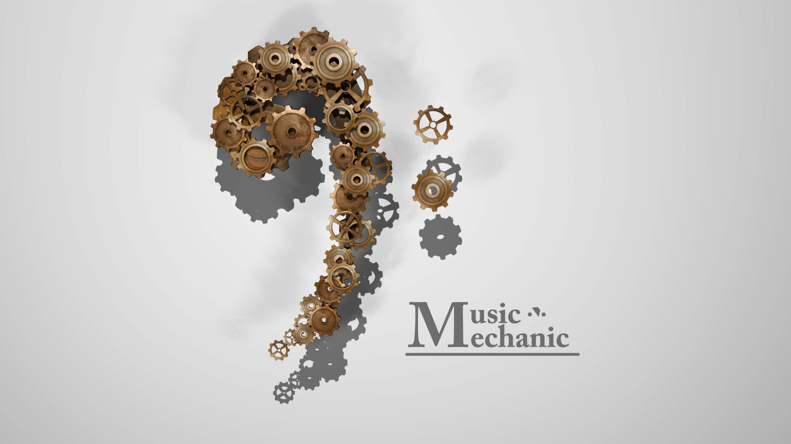
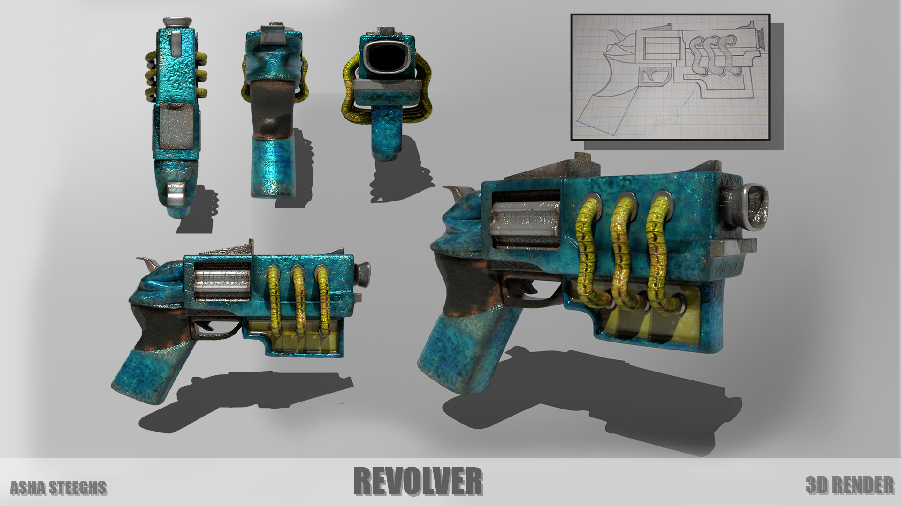
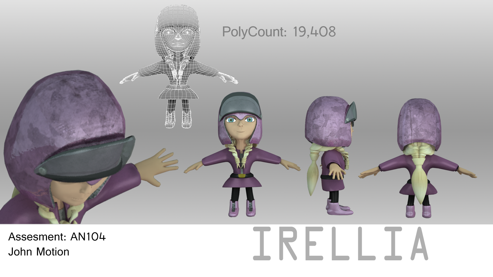
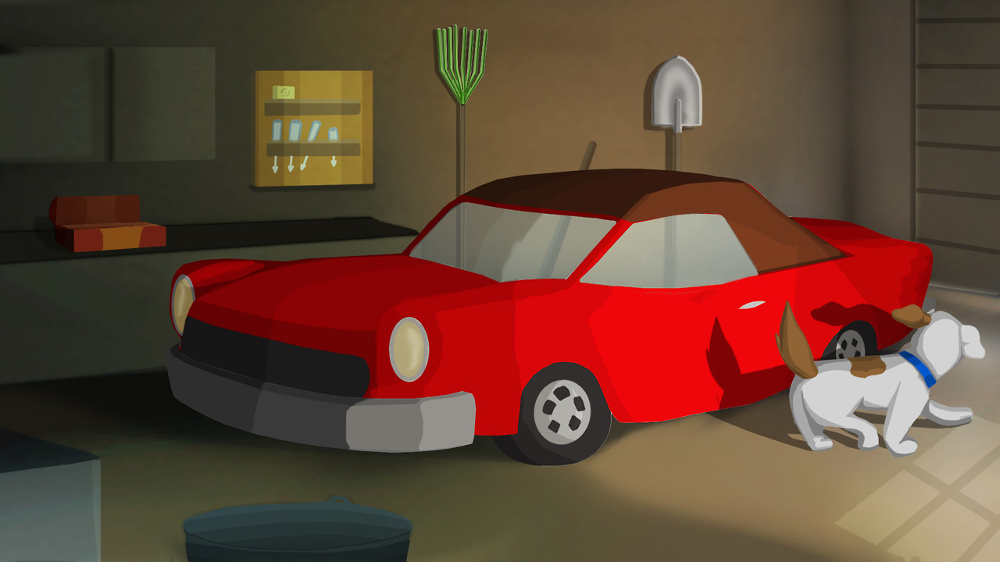
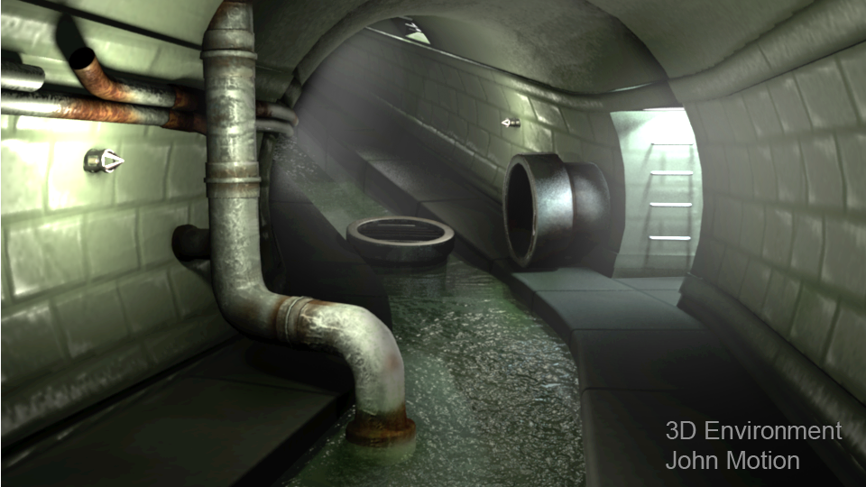
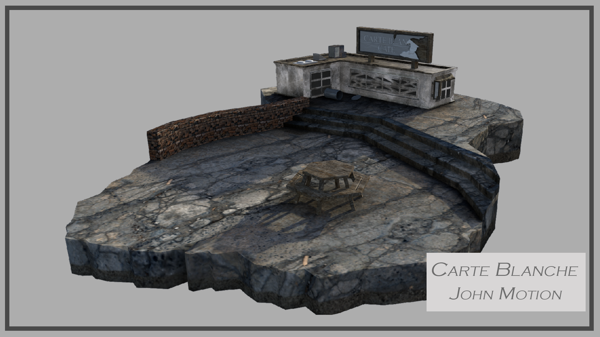

M2 Browning Machine Gun
Jan 5, 2025

This week I did an updated render of my old machine gun model. Reworked textures, lighting, and presentation shots were added (Made in Maya) (Textured in Photoshop).
View full galleryJan 5, 2025
This week I did an updated render of my old machine gun model. Reworked textures, lighting, and presentation shots were added (Made in Maya) (Textured in Photoshop).
View full galleryDecember 23, 2024

This stylized Honey Tank was inspired by cartoon-style war vehicles with a playful military design. Fully textured and with turntable-ready lighting (Made in Maya) (Textured in Photoshop).
View full galleryNovember 28, 2024

This is my remake of the Berte robot character. I focused on shape language, metallic texturing, and personality in its stance and weapon rigging (Made in Maya) (Textured in Photoshop).
View full galleryOctober 17, 2024

This fantasy weapon design blends mechanical parts with organic materials. I explored different poses and movement with rigged characters and animated the unique slicing function (Made in Maya) (Textured in Photoshop).
View full galleryOctober 8, 2025
These branding concepts were created for Tru-Flooring, a New Zealand-based flooring company. The brief required clean, adaptable logo designs that would work across print and merchandise—including t-shirts and storefront signage.
View full galleryOctober 2, 2024

This steampunk shield concept emphasizes ornate brass detailing and gem-core technology. I explored multiple material styles to experiment with emissive metals, symmetry, and practical fantasy wear (Made in Maya) (Textured in Photoshop).
View full gallerySpetember 24, 2024

This was a commissioned freelance project where I developed a stylized, modular stage environment for a DJ livestream setup. The concept involved bright color grading and dynamic layout elements.
September 19, 2024

This high-poly stylized fire hydrant was modeled for urban prop training and shading tests. Rendered with cinematic 3-point lighting and subtle post-processing. Includes full angle views and clean topology (Made in Maya) (Textured in Photoshop).
View full gallerySeptember 01, 2024

The Lightning Sword is a high-energy weapon design inspired by storm-forged steel and mythic blades. This concept explores silhouettes, emissive material nodes, and physical shader workflows for glowing blade effects (Made in Maya) (Textured in Photoshop).
View full galleryAugust 04, 2024

The Lightning Bow project explores fantasy weapon design with electric aesthetics, a curving silhouette, and glowing emissive materials. It features sculpted variants and final render passes alongside the original concept sketch (Made in Maya) (Textured in Photoshop).
View full galleryJuly 23, 2024
This is a dynamic fantasy weapon designed for brutal melee combat. The Lightning Chain Axe merges futuristic energy channels with grounded mechanical heft. A concept rooted in stylized action aesthetics (Made in Maya) (Textured in Photoshop).
View full galleryJune 5, 2024

A new fantasy-inspired axe designed for high-energy combat, blending hand-crafted details with stylized elemental force. One of my earliest 2020 designs, now fully retextured and re-presented for 2024 (Made in Maya) (Textured in Photoshop).
View full galleryMay 25, 2024
This is my fantasy medieval axe inspired by Norse design. I refined this model with updated lighting and edge detailing, and included an older 2D sketch as the base concept for the build.
View full galleryMay 2, 2024
I created this logo and branding material for a client’s music-focused business called Music Mechanic. The design combines industrial motifs with sound wave shapes to represent both the technical and creative aspects of their identity. This job involved high-resolution vector work and multiple presentation mockups.
April 14, 2024

This poster was created as a concept art piece for a synthwave-inspired racing game. The artwork channels a neon-soaked, retro-futuristic Miami vibe with bold typography, saturated pinks and purples, and strong composition. It was an experimental design blending 3D, photo-bashing, and graphic layout techniques.
April 5, 2024
This 3D revolver was designed with a steampunk aesthetic in mind, incorporating brass finishes, mechanical joints, and exaggerated components. The model showcases detailed surface work, material variation, and multiple assembly angles for presentation. It’s ideal for stylized game or cinematic prop usage.
March 23, 2024

This fantasy weapon concept features a glowing elemental hook sword. I explored mesh detail, fiery shaders, and a smoke-wrapped animation loop to showcase this stylized model.
View full galleryJuly 19, 2019
This stylized character was designed for an original fantasy IP. I focused on blending vibrant costume design, clear silhouette work, and turntable-ready poses. Sculpted and posed in ZBrush, then rendered for presentation.
October, 2018
Gus is a short comedic animation project focused on expression, squash & stretch, and character storytelling. Rendered in HD with full lighting, rigging, and layout sequencing. Features a sleepy dog and an unexpected twist.
View full gallerySeptember 23, 2017
This piece showcases the environmental design process of a sewer tunnel transitioning from an initial 2D concept to a fully realized 3D render. I focused on lighting, material shaders, and spatial layout to emphasize depth and realism. This project demonstrates my ability to evolve ideas from sketch to final visualization.
View full galleryAugust 15, 2017
This week I finalized two presentation renders of a small, modular café building environment. These were designed with stylized lighting and soft form geometry in mind for visual storytelling.
View full gallery